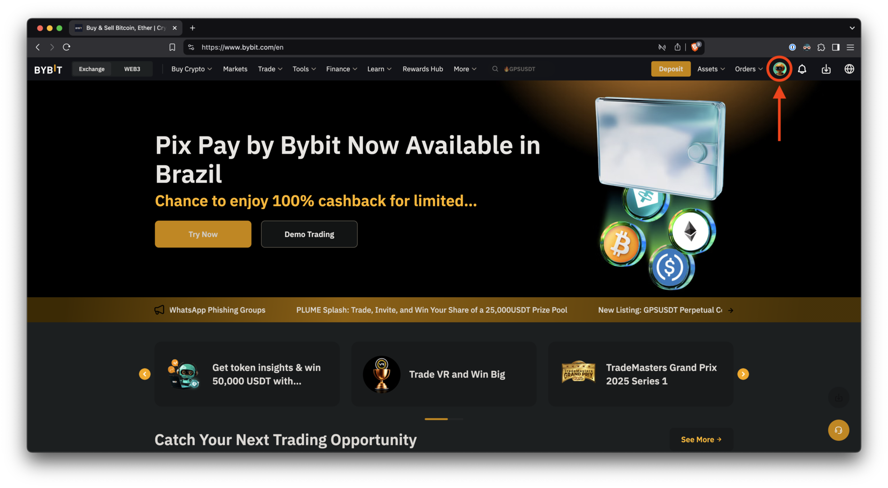
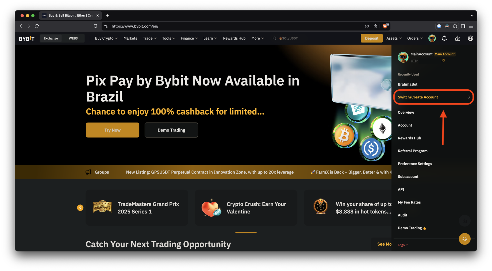
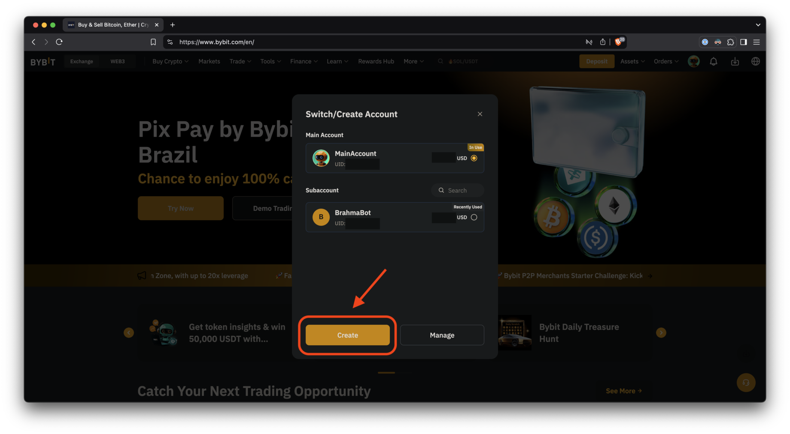
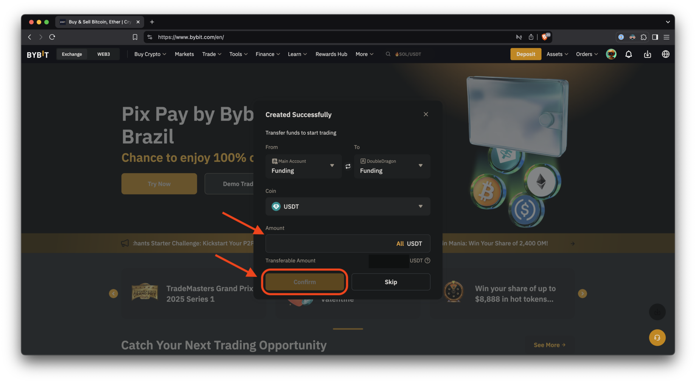
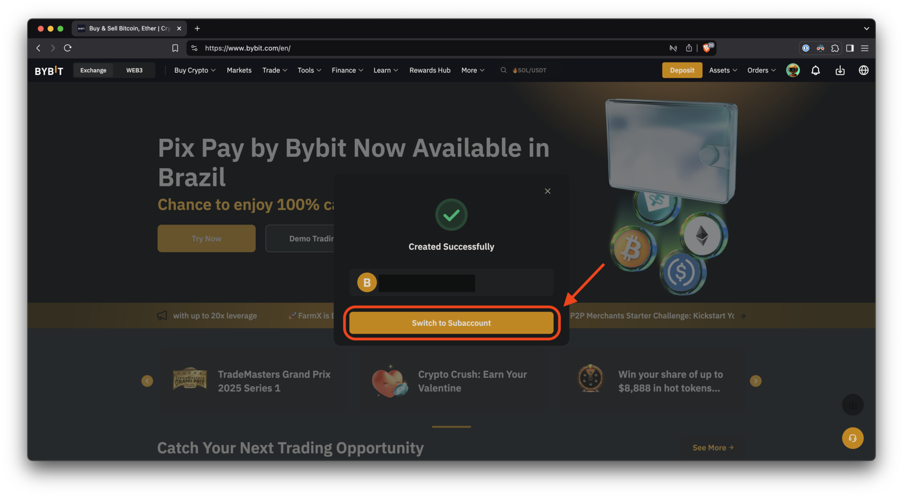

Creating a new subaccount
Step 1
Click on the profile image to show the account menu options.
Step 2
Click on the "Switch/Create Account" button to access subaccounts.
Step 3
Click on the "Create" button to create a new subaccount.
Step 4
-
Add a recognizable name such as the bot's configuration name;
-
Leave the account type as "Unified Trading Account";
-
Finally, press the "Confirm" button to finish the subaccount creation.
Step 5
You can transfer money to the subaccount in this step.
Optionally, you can press the "Skip" button and do it later.
ATTENTION: the bot will not run without money in the Unified Trading Account!
Step 6
Switch to the newly created subaccount.
